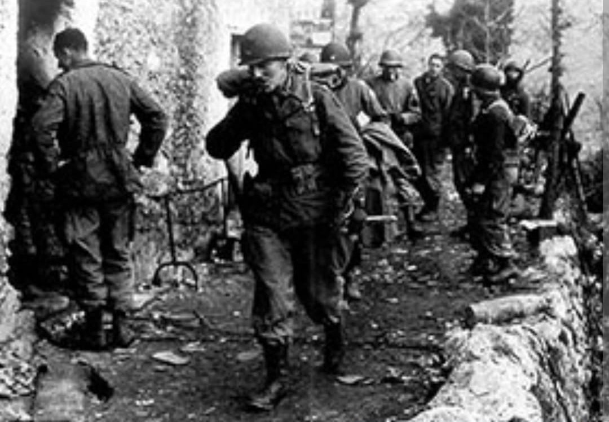
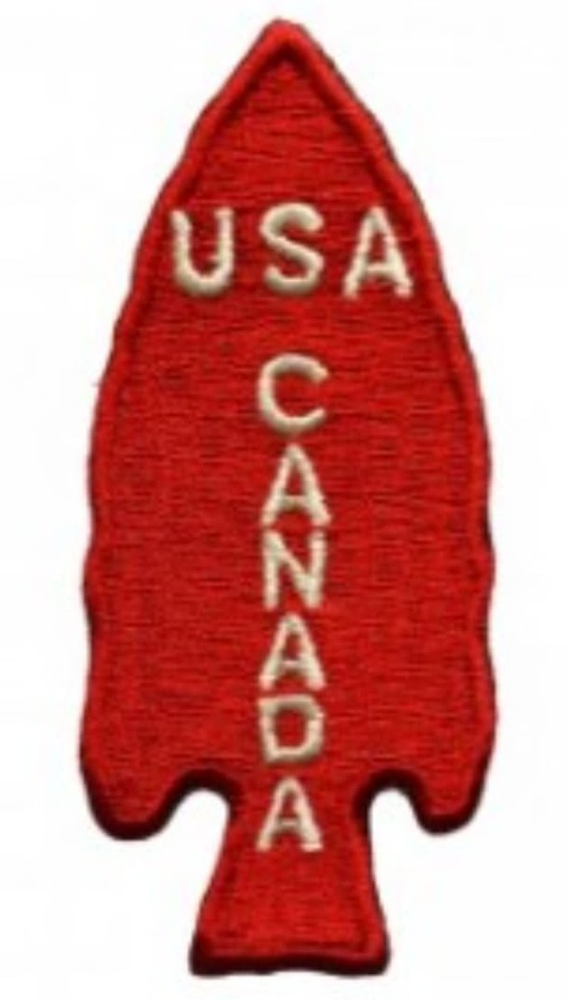
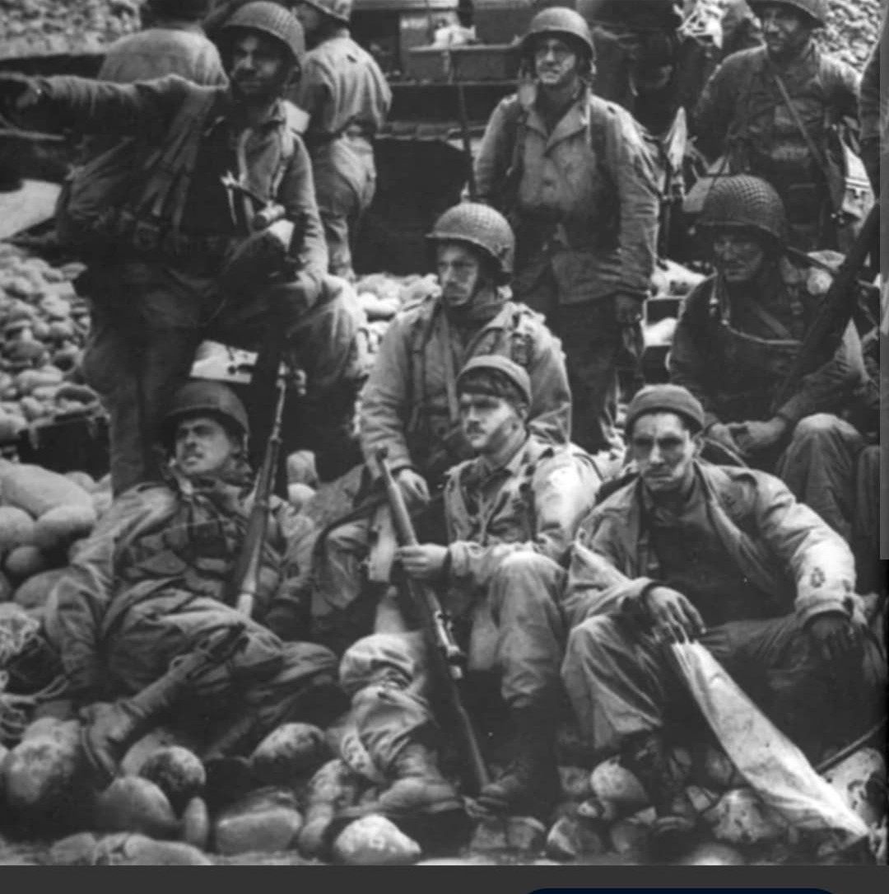

La redoutable brigade mixte américano-canadienne : maîtres du commando et de la guerre psychologique

La 1st Special Service Force (1re Force de service spécial), plus connue sous le nom redoutable de « The Devil's Brigade » (La Brigade du Diable), est une unité militaire conjointe d'élite composée de volontaires américains et canadiens durant la Seconde Guerre mondiale.
Spécialisée dans les opérations commando en milieu difficile, le sabotage et les actions nocturnes de choc, cette unité unique en son genre s'est forgée une réputation terrifiante auprès de l'ennemi en Italie et lors du débarquement de Provence.
Créée en juillet 1942 et entraînée intensivement à Fort William Henry Harrison (Montana), la Force regroupe des soldats d'élite des armées des États-Unis et du Canada. Placée sous le commandement du colonel **Robert T. Frederick**, l'unité est initialement conçue pour mener des missions de sabotage en profondeur dans les zones enneigées et industrielles d'Europe centrale.
Son insigne distinctif met en avant une lance rouge et le nom de l'unité, tandis que les soldats adopten rapidement le couteau de combat V-42 et des techniques de camouflage noir pour leurs missions nocturnes.

Déployée en Italie à l'automne 1943, la Force s'illustre de manière spectaculaire en s'emparant des positions réputées imprenables du **monte La Difensa**, escaladant des falaises escarpées de nuit sous le feu allemand. C'est durant ces combats acharnés que les Allemands, terrifiés par leurs raids silencieux et efficaces, les surnomment les « Die Schreckensmänner » (Les Hommes de la Terreur), donnant naissance au mythe de la "Brigade du Diable".
Elle participe ensuite à la tête de pont d'Anzio, tenant des secteurs exposés pendant des mois avec une ténacité légendaire et entrant la première dans Rome libérée en juin 1944.

En août 1944, la Force est engagée dans l'**Opération Dragoon** (le débarquement de Provence), s'emparant des îles d'Hyères avant de participer aux combats le long de la frontière franco-italienne.
Bien que dissoute en décembre 1944 en raison de pertes élevées et de réorganisation des forces, la 1st Special Service Force a jeté les bases des forces spéciales modernes et des commandos héliportés et amphibies actuels des deux nations.
Page du Musée HOP WW2 – Section Unités & Divisions